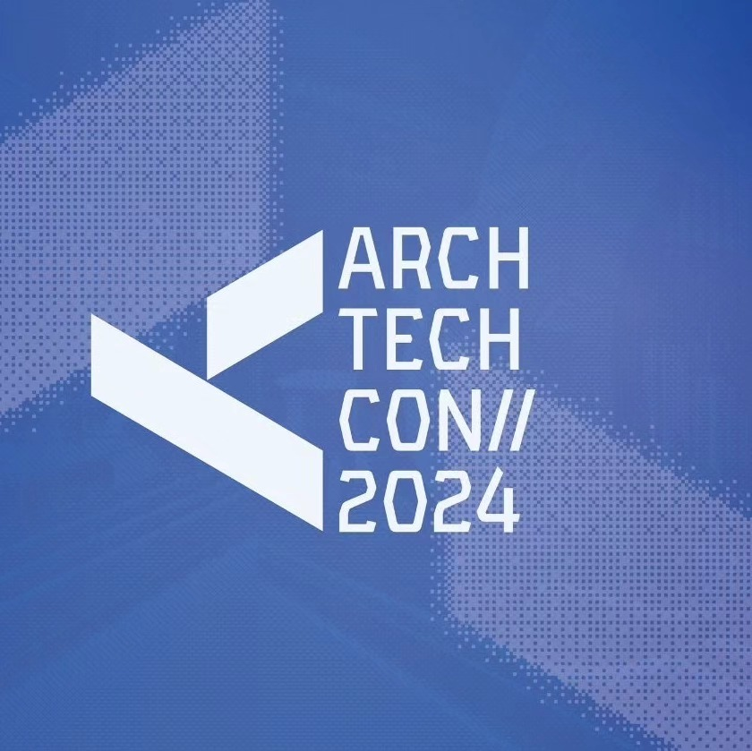
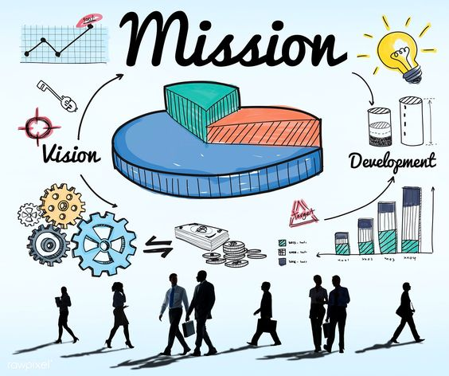
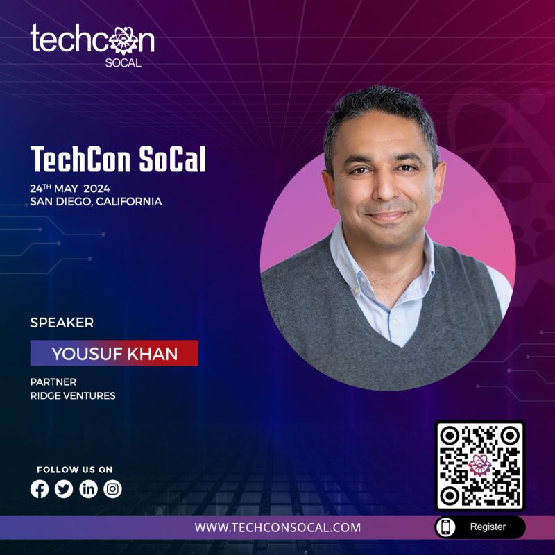
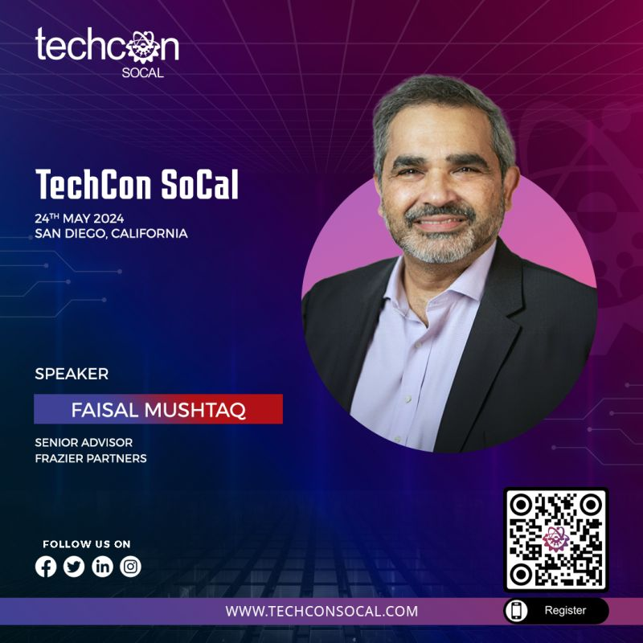
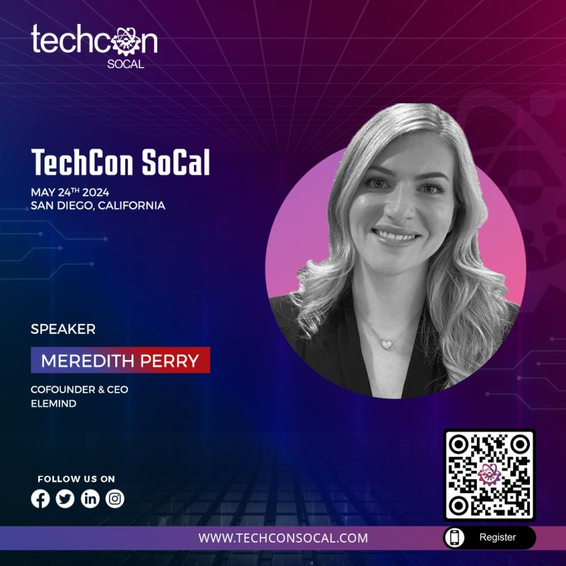

History
TechCon started in 2010 as a small gathering of tech enthusiasts and has grown into one of the most influential technology conferences in the world. Over the years, it has hosted thousands of attendees and hundreds of speakers, becoming a hub for innovation and collaboration.

Mission
Our mission is to inspire and connect the tech community by providing a platform for sharing knowledge, fostering innovation, and promoting diversity in technology. TechCon aims to empower individuals and organizations to create a better future through technology.

Past Speakers
Yousuf Khan

In his current role at Ridge Ventures, Yousuf leverages his extensive experience as a CIO at companies like Automation Anywhere, Pure Storage, and Qualys to support founders in navigating the startup landscape. Renowned as the "Helper-in-Chief" in CIO circles, Yousuf is dedicated to fostering innovation and growth, evident in his monthly CIO Group Therapy series where founders receive valuable feedback from industry leaders.
Faisal Mushtaq

He is a Board Director | Private Equity Senior Advisor | CEO | High Growth Technology-Enabled Healthcare Services | ex Allscripts, ex Change Healthcare | Launch & Scale | Turnaround & Transformation | Growth Acceleration
Meredith Perry

She is Co-founder & CEO of Elemind Technologies, Inc., for TechCon SoCal 2024! Join us as she explores the theme of Innovation with her groundbreaking work in developing wearable neurotechnology.